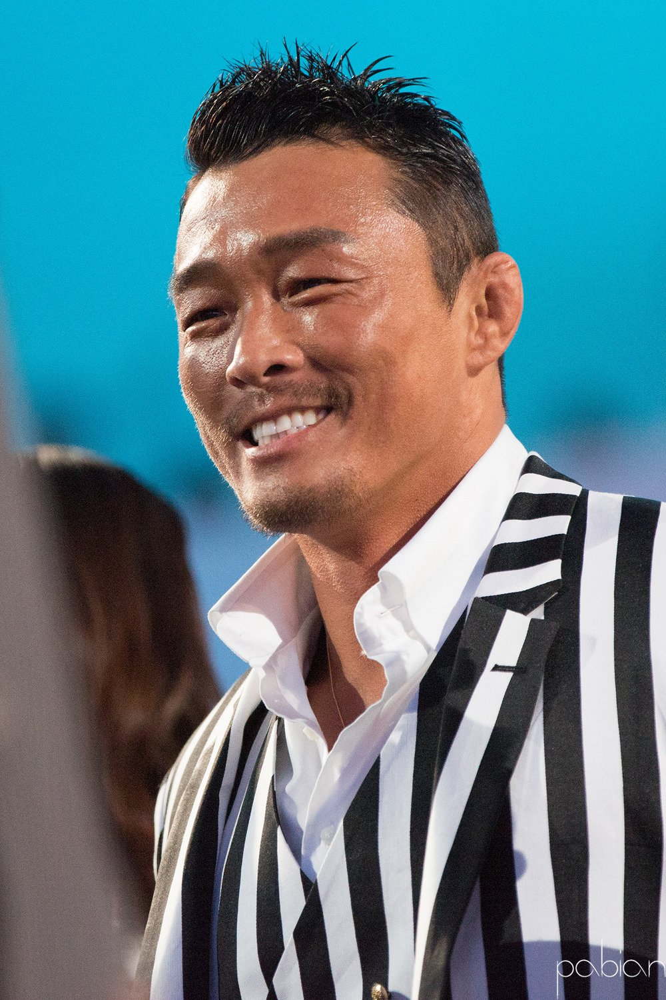
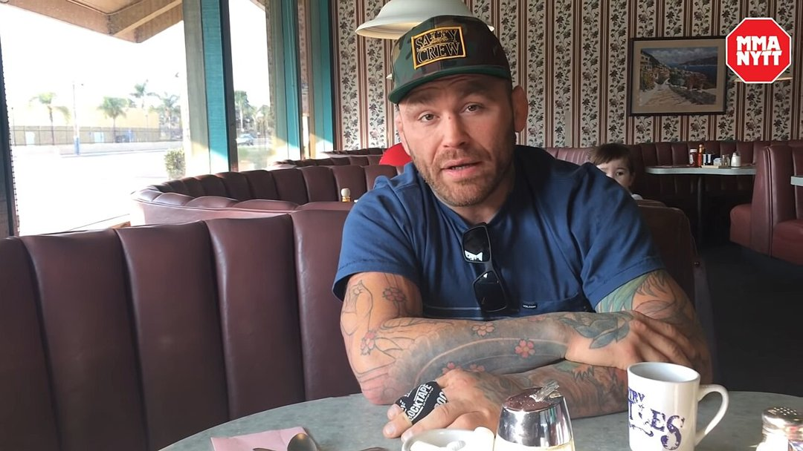

어머니가 아버지의 영정을 들고 함께 걸어 들어왔어요. 추성훈의 마지막 입장이었어요. 11월 21일 서울 고척스카이돔에서 열린 추성훈 은퇴전은 판정패로 끝났어요. 결과와 채점, 상대가 누구였는지, 마지막에 남긴 말까지 차례로 볼게요.
📷 사진 1 자리
▲ 추성훈(2016년) / 사진: Pabian / CC BY-SA 4.0 / 위키미디어 공용
결과는 1대2 스플릿 판정패
추성훈은 '블랙컴뱃 17' 코메인 이벤트에서 크리스 리벤과 89kg 경기를 치렀어요. 3라운드를 모두 싸웠고 심판 세 명 중 두 명이 리벤의 손을 들었어요.
▶ 영상 1 자리
| 심판 | 점수(추성훈-리벤) |
|---|---|
| 심판 1 | 28-29 |
| 심판 2 | 29-28 |
| 심판 3 | 28-29 |
1라운드에는 추성훈이 킥을 맞히며 앞서는 장면도 있었어요. 하지만 2라운드부터 리벤의 압박이 거세졌고, 3라운드 공방도 결과를 뒤집지 못했어요.
상대 크리스 리벤, 16년 만의 재대결
크리스 리벤은 46세 미국 선수로 UFC 출신이에요. 두 사람은 2010년 UFC 116에서 한 번 붙었어요. 그때 추성훈은 3라운드에 리벤의 서브미션에 걸려 졌어요.
📷 사진 2 자리
▲ 크리스 리벤(2018년) / 사진: MMAnytt / CC BY 3.0 / 위키미디어 공용
마지막 경기 상대로 그 리벤을 다시 만난 셈이라 설욕전으로 관심을 모았어요. 결과는 이번에도 리벤의 승리였어요.
통산 전적과 걸어온 길
추성훈은 이 경기로 종합격투기 통산 16승 8패(2무효)를 남기고 은퇴했어요.
| 연도 | 일 |
|---|---|
| 1998 | 재일교포 4세로 한국에 와 유도 선수로 활동 |
| 2001 | 일본 귀화 |
| 2002 | 부산 아시안게임 유도 81kg급 금메달(일본 대표) |
| 2004 | 종합격투기 전향, 이후 K-1 히어로즈·UFC에서 활약 |
| 2026 | 11월 21일 은퇴전 |
마지막에 남긴 말
경기가 끝나자 추성훈은 케이지 바닥에 글러브를 내려놓고 은퇴를 알렸어요. 이번 경기에서 받는 파이트머니는 앞으로 경기를 치를 후배 격투기 선수들에게 모두 기부하겠다고 밝혔어요.
관중석에서는 아내 야노 시호와 딸 추사랑이 마지막 경기를 지켜봤어요. 경기 뒤 추사랑은 케이지에 올라 아빠를 끌어안고 울었어요.
같은 날 SNS에는 48년 이어 온 격투기 인생이 막을 내린다며 "나의 격투기 인생은 여기서 끝나지만, 나의 인생은 아직 끝나지 않았습니다"라고 적었어요.
▶ 영상 2 자리
채점표를 보면 세 심판 모두 한 점 차였어요. 51세 은퇴전에서 16년 전 자신을 이긴 상대와 마지막 라운드까지 갔다는 기록이 패배라는 결과보다 오래 남을 것 같아요. 경기 준비 과정은 추성훈 본인 유튜브 채널의 'Rebirth' 영상에서 볼 수 있어요.
추성훈 은퇴전은 크리스 리벤에게 1대2 판정패로 끝났고, 통산 전적은 16승 8패(2무효)예요.

